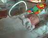
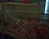
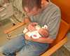
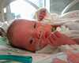

25th August 2001
Poppy has had a quiet day today. The doctors think she may have a reflux problem which is causing her bradycardias. This is probably due to the muscle not being fully developed, and the problem should disappear as she gets older.
24th August 2001
Poppy has ended her first week in High Care. She now weighs 4lb 3oz and is coping OK in her cot. We have found that she is coping with being brought out for cuddles if she is awake, but not if she is asleep.
23rd August 2001
Poppy has moved into a cot now. She qualified for cot status at 3lb 12oz, so that feels like a big achievement. The doctors have tested Poppy's blood for infections and have found none, which is good news. Poppy has not had any problems today and actually had a very good breast feed this morning, which replaced her tube feed.
22nd August 2001
Poppy now weighs 4lb 2oz. She looks well, but seems to be happier if left in the incubator. She had another bradycardia this evening, which has concerned us and the nurse will consult with the doctors about blood tests. She may have picked up another infection. Aeryn was able to touch Poppy for the first time today. She stroked her head.
21st August 2001
Poppy has been a lot happier today; she is much more stable now that she is on CPAP for a longer period. Poppy had her eyes tested today as she has each week since she was 6 weeks old. The blood vessels in her eyes are checked for development. There are no problems with them so far, although there is some likelihood of her needing glasses or other correcting measures for short-sightedness or squints later on, because of her prematurity.


20th August 2001
It has been a tiring day for Poppy today, and a reminder to us just how fragile she still is. She had two episodes of bradycardias today, which is when she stops breathing. This can be very frightening but is considered to be normal in a baby Poppy's age. As a result of this her time off CPAP is being reduced and her milk intake is also being reduced. This should give her the chance that she needs to rest for a few days.
19th August 2001
Poppy has been quite tired after her big day on Friday and has enjoyed a very quiet day today. This evening she was alot more alert and Mike was able to cup-feed her. This method of feeding is considered more appropriate than bottle feeding, as she has to lap up the milk; a similar action to breastfeeding. Bottle feeding would be too easy and would spoil her for breastfeeding. Poppy is having 27ml of milk every two hours, but her feeds will soon be changed to three-hourly. This will mean that she gets more hungry before her next feed and will wake up. Sharon should then be able to breastfeed more successfully, more often.

